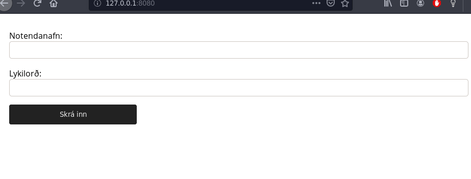
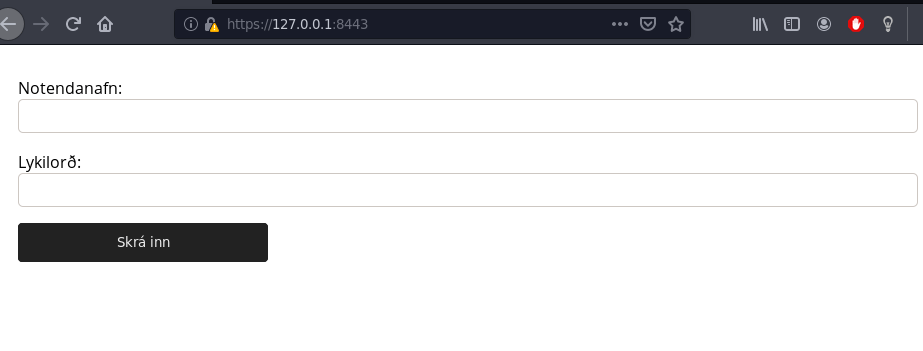
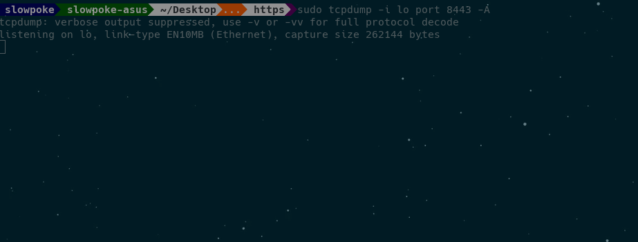
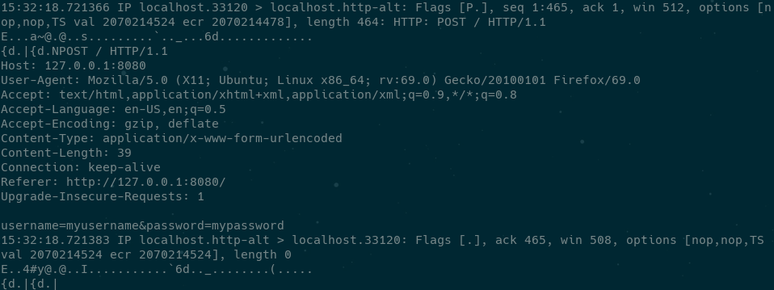
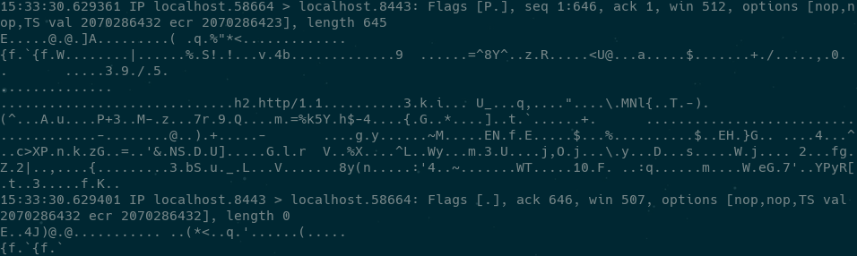

<!DOCTYPE html>
<html lang="en">
  <head>
    <meta charset="utf-8" />
    <meta name="viewport" content="width=device-width, initial-scale=1.0, maximum-scale=1.0, user-scalable=no" />

    <title>reveal-md</title>
    <link rel="stylesheet" href="./css/reveal.css" />
    <link rel="stylesheet" href="./css/theme/black.css" id="theme" />
    <link rel="stylesheet" href="./css/highlight/zenburn.css" />
    <link rel="stylesheet" href="./css/print/paper.css" type="text/css" media="print" />

  </head>
  <body>
    <div class="reveal">
      <div class="slides"><section  data-markdown><script type="text/template"># HTTPS
## Hypertext Transfer Protocol Secure

Hjalti Geir Garðarsson

Guðmundur Óli Norland

Teitur Guðmundsson
</script></section><section  data-markdown><script type="text/template">
# http//:
Hyper Text Transfer Protocol
</script></section><section  data-markdown><script type="text/template">

</script></section><section  data-markdown><script type="text/template">
1. Biðlari sendir beiðni yfir vefinn
2. Vefþjónn tekur á móti beðninni
3. Þjónninn keyrir forrit til að vinna beiðnina
4. Þjónninn skilar HTTP svari
5. Biðlarinn tekur við svarinu</script></section><section  data-markdown><script type="text/template">
 </script></section><section  data-markdown><script type="text/template">
# https//:
Hyper Text Transfer Protocol Secure


</script></section><section  data-markdown><script type="text/template">
# TLS/SSL
</script></section><section  data-markdown><script type="text/template">
### TLS/SSL sáttmálaferlið (handshake)
#### Skref fyrir skref með dæmum frá Uglu


</script></section><section ><section data-markdown><script type="text/template">
### Skref 1.
##### Biðlari sækist eftir SSL/TLS samskiptum.

* Biðlari (*client*) sendir HTTPS beiðni á þjón (*server*) Uglu.

* Samskiptaaðferð (*SSL/TLS*).

* Dulkóðunarpakki (*Cipher Suite*)
</script></section><section data-markdown><script type="text/template">
#### Innihald dulkóðunarpakkans

* Algoriðmi til að búa til og skiptast á lyklum (*key exchange algorithm*).

* Algoriðmi fyrir umfangsdulkóðun (*bulk encryption algorithm*).

* Algoriðmi fyrir skilaboðastaðfestingu (*message authentication code algorithm*).

* Fókusum mest á lyklaskiptin.
</script></section></section><section ><section data-markdown><script type="text/template">
### Skref 2.
##### Vefþjónninn svarar
</script></section><section data-markdown><script type="text/template">
Það sem vefþjónninn sendir til baka:

* Dulkóðunarpakka sem báðir aðilar styðja.

* Lotuauðkenni (*session ID*)

* Auðkennisskírteini sem er gefið út af þriðja aðila (*certificate authority*)
</script></section><section data-markdown><script type="text/template">

</script></section><section data-markdown><script type="text/template">

</script></section><section data-markdown><script type="text/template">

</script></section></section><section ><section data-markdown><script type="text/template">
### Skref 3.
##### Biðlarinn sannprófar auðkennisskírteinið.
</script></section><section data-markdown><script type="text/template">
Fjögur skref:

* Er dagsetningin í dag innan gildistíma skírteinisins?

* Er þriðji aðilinn sem gefur út skírteinið á lista yfir trausta aðila hjá biðlaranum?

* Biðlarinn ber saman almenna lykilinn sem hann er með fyrir þennan aðila og þann á skírteininu.

* Stemmir lénið á skírteininu við lén þjónsins?
</script></section><section data-markdown><script type="text/template">
Ef komist er í gegnum öll þessi skref veit biðlarinn að þjónninn er sá sem hann segist vera.
</script></section><section data-markdown><script type="text/template">

</script></section></section><section ><section data-markdown><script type="text/template">
### Skref 4.
##### Biðlarinn og þjónninn þurfa lykil til að dulkóða / afkóða skilaboð.
</script></section><section data-markdown><script type="text/template">
#### Samhverfir lyklaalgoriðmar

Samhverfir lyklaalgoriðmar nota einn lykil til að dulkóða og afkóða, algengast er hins vegar að nota ósamhverfa lyklaalgoriðma til þess að búa til samhverfan lykil.
</script></section><section data-markdown><script type="text/template">
#### Ósamhverfir lyklaalgoriðmar

Án þess að vita neina stærðfræði á bakvið lyklaalgoriðma þurfum við að treysta þessu tvennu um ósamhverfa lyklaalgoriðma:
</script></section><section data-markdown><script type="text/template">
1. Öll skilaboð sem eru dulkóðuð með lyklinum hjá Uglu geta einungis verið afkóðuð með einkalykli Uglu.

2. Aðili með aðgang að almenna lyklinum hjá Uglu getur staðfest ef skilaboð voru send af einhverjum með aðgang að einkalykli Uglu.
</script></section><section data-markdown><script type="text/template">
#### ECDGE_RSA

* EC**_DG_**E: Diffie-Helmann mjög algengur ósamhverfur (asymmetric) algoriðmi.

* Biðlarinn dulkóðar skilaboð með almenna lykli Uglu til að búa til sameiginlegt leyndarmál (samhverfan lykil). Ugluþjónninn afkóðar skilaboðin með einkalykilinum sínum.
</script></section><section data-markdown><script type="text/template">

</script></section></section><section ><section data-markdown><script type="text/template">
### Skref 5.
##### Staðfesting
</script></section><section data-markdown><script type="text/template">
* Ugluþjónninn sendir til baka staðfestingarskilaboð, dulkóðuð með leyndarmálinu / samhverfa lyklinum.

* Þetta sameiginlega leyndarmál / þessi samhverfi lykill er svo notaður til að afkóða og dulkóða öll skilaboð á milli biðlarans og þjónsins.
</script></section></section><section  data-markdown><script type="text/template">
### Niðurstaðan
##### Örugg SSL/TLS samskipti á milli biðlarans og þjónsins


</script></section><section  data-markdown><script type="text/template">

## Raunverulegt dæmi
</script></section><section ><section data-markdown><script type="text/template">
### Lyklar og auðkennisskírteini

Það er mjög auðvelt að búa til sitt eigið auðkennisskírteini, ásamt lykli.
</script></section><section data-markdown><script type="text/template">
Lykill (*private key*)


</script></section><section data-markdown><script type="text/template">
Auðkennisskírteini (*certificate*)


</script></section></section><section ><section data-markdown><script type="text/template">
## *Certificate Authority*
Vafrar treysta aðeins ákveðnum aðilum. Listi af þessum aðilum eru vanalega innbyggðir í vafrann.

* Comodo
* IdenTrust
* Symantec
* GoDaddy
</script></section><section data-markdown><script type="text/template">
## Firefox

```sh
prefrences -> Privacy & Security -> View Certificates...
```


</script></section><section data-markdown><script type="text/template">

</script></section></section><section ><section data-markdown><script type="text/template">
### Man-in-the-middle attack

Þegar tveir aðilar eru að skiptast á upplýsingum, þá getur þriðji aðili

* hlustað á samskiptin.
* breytt pökkum
</script></section><section data-markdown><script type="text/template">
Svo kallaður *packet-analyzer* eða *packet-sniffer* eru notaðir til þess að fylgjast með pökkum sem er verið að senda á milli tveggja aðila (*network traffic*)

* tcpdump
* Wireshark
</script></section><section data-markdown><script type="text/template">
# HTTP




</script></section><section data-markdown><script type="text/template">
# HTTPS




</script></section><section data-markdown><script type="text/template">
HTTP



HTTPS


</script></section></section><section  data-markdown><script type="text/template">
## Verkefnið

[github.com/http_vs_https](https://github.com/slowpokesheep/http_vs_https)

</script></section><section ><section data-markdown><script type="text/template">
## Skipanir

HTTP
```
sudo tcpdump -i lo port 8080 -A
```
```
sudo tcpdump -i lo port 8080 -A | egrep -i "POST /|pwd=|passwd=|password=|Host:"
```

HTTPS
```
sudo tcpdump -i lo port 8443 -A
```
</script></section><section data-markdown><script type="text/template">
* <span style="color:blue">`tcpdump`</span>
  * Forrit til að fylgjast með umferð á *network*
* <span style="color:blue">`-i lo`</span>
  * Við hlustum á localhost
* <span style="color:blue">`port 8080`</span>
  * Við hlustum á porti 8080
* <span style="color:blue">`-A`</span>
  * Prentum út alla pakka á ASCII sniði
</script></section><section data-markdown><script type="text/template">
Hvernig búa til lykla og *certificate*

```
sudo openssl req -x509 -nodes -newkey rsa:2048 -keyout ./selfsigned.key -out selfsigned.crt
```
</script></section><section data-markdown><script type="text/template">
* <span style="color:blue">`openssl req`</span>
  * Forrit til að búa til lykla og *certificate*
* <span style="color:blue">`-x509`</span>
  * Við skrifum sjálf upp á *certificate*
* <span style="color:blue">`-nodes`</span>
  * Kemur í veg fyrir að *private key* sé dulkóðaður
* <span style="color:blue">`-newkey rsa:2048`</span>
  * Býr til 2048 bita RSA lykil og *certificate*
* <span style="color:blue">`-keyout -out`</span>
  * Hvert lykillinn og *certificate* eru send
</script></section></section><section ><section data-markdown><script type="text/template">
## Heimildir

* [what_is_https](https://www.tutorialsteacher.com/https/what-is-https)
* [wikipedia_http](https://en.wikipedia.org/wiki/Hypertext_Transfer_Protocol)
* [w3_http](https://www.w3schools.com/whatis/whatis_http.asp)
</script></section><section data-markdown><script type="text/template">
* [youtube/how_ssl_certificate_works](https://www.youtube.com/watch?v=33VYnE7Bzpk)
* [ibm/ssl_tsl](https://www.ibm.com/support/knowledgecenter/en/SSFKSJ_7.1.0/com.ibm.mq.doc/sy10660_.htm)
* [wikipedia/cipher_suite](https://en.wikipedia.org/wiki/Cipher_suite)
* [oracle_ssl_handshake](https://docs.oracle.com/cd/E19693-01/819-0997/aakhc/index.html)
* [symmetric_vs_asymmetric_encryption](https://www.ssl2buy.com/wiki/symmetric-vs-asymmetric-encryption-what-are-differences#targetText=Symmetric%20encryption%20uses%20a%20single,and%20decrypt%20messages%20when%20communicating.&targetText=Asymmetric%20encryption%20takes%20relatively%20more%20time%20than%20the%20symmetric%20encryption)
</script></section><section data-markdown><script type="text/template">
* [wikipedia/man-in-the-middle-attack](https://en.wikipedia.org/wiki/Man-in-the-middle_attack)
* [wikipedia/HTTPS](https://en.wikipedia.org/wiki/HTTPS)
* [wikipedia/packet_analyzer](https://en.wikipedia.org/wiki/Packet_analyzer)
* [tcpdump_commands](https://www.tecmint.com/12-tcpdump-commands-a-network-sniffer-tool/)
* [tcpdump_cmd_password](https://techarena51.com/blog/tcpdump-examples-to-capture-passwords/)
* [openssl_help](https://www.digitalocean.com/community/tutorials/how-to-create-a-self-signed-ssl-certificate-for-apache-in-ubuntu-16-04)</script></section></section></div>
    </div>

    <script src="./js/reveal.js"></script>

    <script>
      function extend() {
        var target = {};
        for (var i = 0; i < arguments.length; i++) {
          var source = arguments[i];
          for (var key in source) {
            if (source.hasOwnProperty(key)) {
              target[key] = source[key];
            }
          }
        }
        return target;
      }

      // Optional libraries used to extend on reveal.js
      var deps = [
        { src: './plugin/markdown/marked.js', condition: function() { return !!document.querySelector('[data-markdown]'); } },
        { src: './plugin/markdown/markdown.js', condition: function() { return !!document.querySelector('[data-markdown]'); } },
        { src: './plugin/highlight/highlight.js', async: true, callback: function() { hljs.initHighlightingOnLoad(); } },
        { src: './plugin/zoom-js/zoom.js', async: true },
        { src: './plugin/notes/notes.js', async: true },
        { src: './plugin/math/math.js', async: true }
      ];

      // default options to init reveal.js
      var defaultOptions = {
        controls: true,
        progress: true,
        history: true,
        center: true,
        transition: 'default', // none/fade/slide/convex/concave/zoom
        dependencies: deps
      };

      // options from URL query string
      var queryOptions = Reveal.getQueryHash() || {};

      var options = extend(defaultOptions, {}, queryOptions);
    </script>


    <script>
      Reveal.initialize(options);
    </script>
  </body>
</html>
